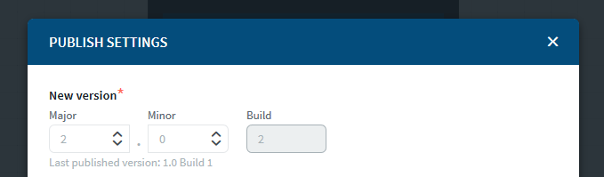
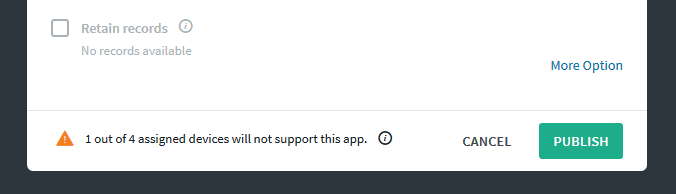
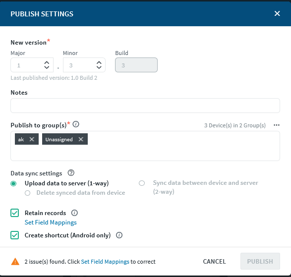

Ensure that your app has at least one widget and that all your changes have been saved.
About this task
Publish your app to make it available for users to download. You can choose whether to publish the app to a select group of users or to all users in all groups. SOTI Snap publishes the app for both iOS and Android devices at the same time.
To publish an app:
Procedure
Choose where you want to publish the app from
To publish from the App Manager, hover over an app in a Draft or Inactive state then click Publish.
To publish from the Canvas, select Publish in the blue bar across the top of the console.
In the Publish Settings dialog box, fill in the required information:
App Versioning. Update the app version using the counter fields under the New version header.
You can change both the Major and Minor version of the app, depending on the significance of the changes you made to the app. It is not recommended that you enter an app version that is lower than a previously published app as it may cause confusion.

The Build Number is auto-generated by SOTI Snap to differentiate between app versions and cannot be altered.
Notes. Enter comments about the changes you made in this version of the app in the Notes field.
Publish to Groups. Click inside the Publish to group(s) text box to see a list of available groups, or start typing and matching groups will appear. Select the groups you want to publish this app to.
SOTI Snap warns you if any devices in the selected groups are not compatible with the app. You can still publish but incompatible devices won't receive the app. Make sure all devices are active or have the latest SOTI Snap agent installed.

Tip: You can check the version of the SOTI Snap agent on a device in the Devices > Device Manager list. You can send messages to outdated devices that encourage them to update their SOTI Snap agent.
Data Sync Settings. Configure the data sync settings using one of the following options.
Choose
To
Upload data to server (1-way)
Select this option to copy records on the device to the server.
Select Delete synced data from device to delete all records from the device after synchronization.
Sync data between device and server (2-way)
Select this option to synchronize records between the device and the SOTI Snap server, keeping data in both locations the same and up to date. If you add, change, or delete a record on your device, the 2-way synchronization will update the corresponding record on the server as well.
Note: If you select this checkbox, you cannot retain records that you saved in the last published version.
Select Allow other devices to edit records if you want to allow app users to edit records that they didn't create. Otherwise, leave unselected and app users can only edit their own records.
Retain Records. Select Retain Records to transfer app data from the last published version to the next version, so that previously generated data can be used. Click Set Field Mappings to change or fix any mapping issues indicated at the bottom of the Publish Settings dialog box.
Note: This option is only available for apps that have been previously published and if the Data Sync Settings remain the same as the previously published version of the app.

Click More Options to expose the Create Shortcut (Android Only) option which will add an app shortcut to the device screen.
Click Publish.
Results
When your app is published successfully, it will be listed as Active on the App Manager screen.